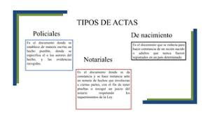
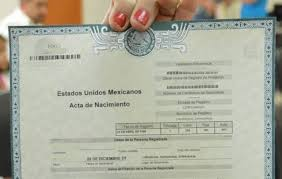

Acta de Nacimiento: Guía Completa y Actualizada
¿Qué es un Acta de Nacimiento?

Es un documento legal que certifica el nacimiento de una persona. Incluye información crucial como:
- Nombre completo
- Fecha y lugar de nacimiento
- Nombres de los padres (y en algunos casos, de los abuelos)
- Sexo
- Número de registro o folio
- Datos del Registro Civil donde se realizó el registro
¿Por qué es Importante?
El acta de nacimiento es fundamental para:
- Comprobar tu identidad y nacionalidad ante cualquier autoridad.
- Inscribirte en instituciones educativas de todos los niveles.
- Obtener tu CURP (Clave Única de Registro de Población).
- Solicitar documentos oficiales como pasaporte, INE (Instituto Nacional Electoral), licencia de conducir, etc.
- Acceder a programas sociales y servicios de salud.
- Casarte legalmente o registrar a tus hijos.
- Realizar trámites bancarios y financieros.
- Demostrar parentesco en casos de herencias o juicios.
Tipos de Acta de Nacimiento

- Acta de Nacimiento Original: Es la primera acta que se expide al registrar el nacimiento.
- Copia Certificada: Es una reproducción fiel del acta original, expedida y certificada por el Registro Civil. Tiene validez legal.
- Acta de Nacimiento en Línea: En algunos estados, puedes obtener una copia certificada en formato digital.
¿Cómo Obtener una Copia Certificada? (Guía Detallada)

Puedes obtenerla de las siguientes maneras:
- En las Oficinas del Registro Civil:
- Ubica la oficina del Registro Civil donde fue registrado el nacimiento.
- Presenta una identificación oficial y los datos de registro (nombre completo, fecha y lugar de nacimiento).
- Paga la tarifa correspondiente.
- Recibe tu copia certificada.
- En Línea (si está disponible):
- Visita la página web del gobierno de tu estado o municipio.
- Busca la sección de "Actas de Nacimiento" o "Trámites en Línea".
- Llena el formulario con los datos solicitados.
- Realiza el pago en línea.
- Descarga e imprime tu copia certificada (verifica que sea válida en tu estado).
- En Kioscos de Servicios Gubernamentales:
- Algunos estados cuentan con kioscos donde puedes obtener copias certificadas de actas.
- Sigue las instrucciones en el kiosco y proporciona los datos requeridos.
- Realiza el pago correspondiente.
- Obtén tu copia certificada.
¡Importante! Los requisitos y costos pueden variar según el estado. Consulta la información oficial del Registro Civil de tu localidad.
¿Qué Hacer si Hay un Error? (Proceso Paso a Paso)

Si encuentras un error en tu acta, sigue estos pasos:
- Identifica el error: Anota claramente el error y la información correcta.
- Reúne la documentación:
- Acta de nacimiento original (si la tienes).
- Identificación oficial con fotografía.
- Documentos que respalden la corrección (ej. acta de matrimonio de los padres, fe de bautismo, cartilla de vacunación, etc.).
- Presenta la solicitud:
- Acude a la oficina del Registro Civil donde fue registrado el nacimiento.
- Solicita el formato de "Aclaración o Rectificación de Acta".
- Llena el formato con la información requerida y adjunta la documentación.
- Da seguimiento: Pregunta sobre el tiempo estimado para la resolución y mantente en contacto con el Registro Civil.
- Recibe la resolución: Una vez aprobada la corrección, te entregarán un nuevo acta con la información correcta.
Preguntas Frecuentes (FAQ)
¿Cuánto cuesta una copia certificada del acta de nacimiento?
El costo varía según el estado. Consulta la tarifa vigente en el Registro Civil de tu localidad.
¿Puedo obtener una copia del acta de nacimiento de otra persona?
En general, solo puedes obtener copias de tu propia acta o de tus hijos menores de edad. En algunos casos, se requiere una autorización legal para obtener el acta de otra persona.
¿Qué hago si no encuentro mi acta de nacimiento?
Acude al Registro Civil donde crees que fuiste registrado y solicita una búsqueda en sus archivos. Proporciona la mayor cantidad de información posible (nombre completo, fecha y lugar de nacimiento, nombres de los padres).
¡Recuerda! Tu acta de nacimiento es un documento valioso. Guárdala en un lugar seguro y obtén copias certificadas solo cuando sea necesario. Mantén una copia digital en un lugar seguro (como un servicio de almacenamiento en la nube) para tener acceso rápido en caso de emergencia.